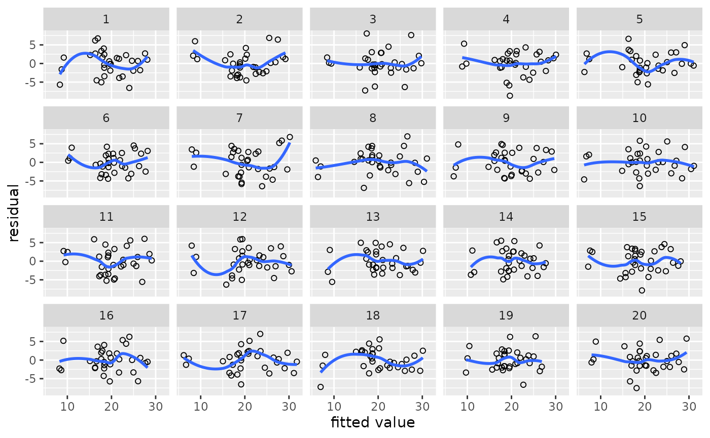
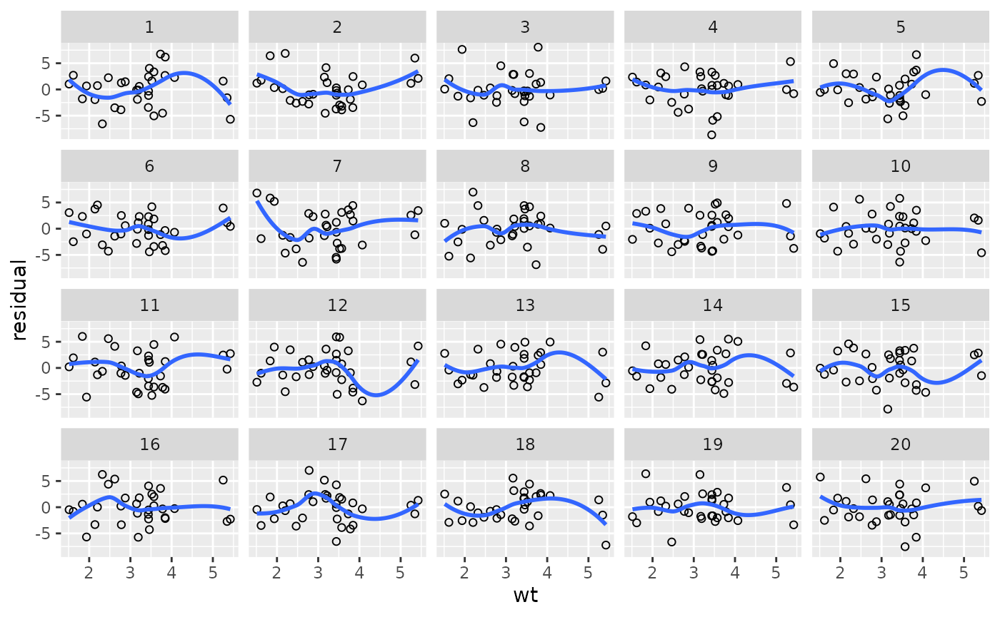
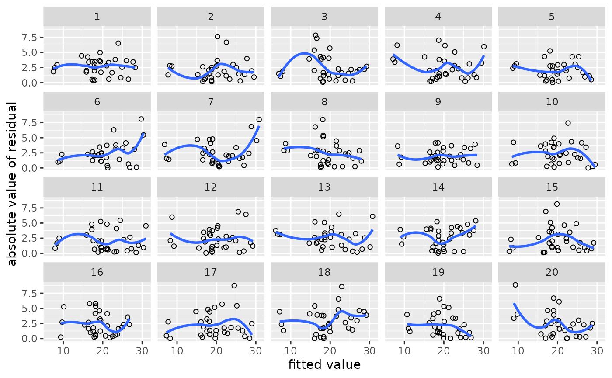
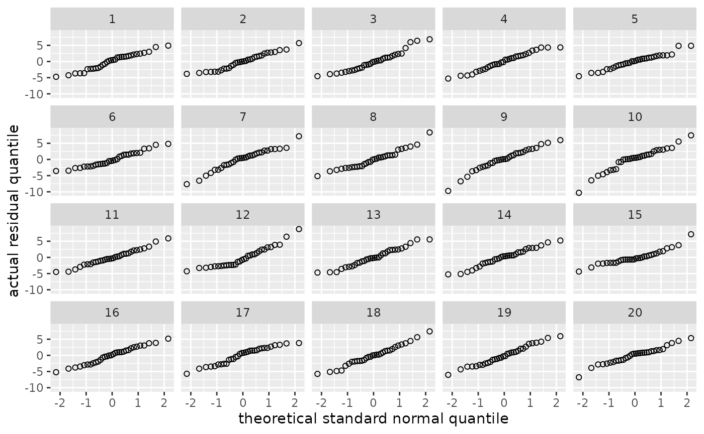
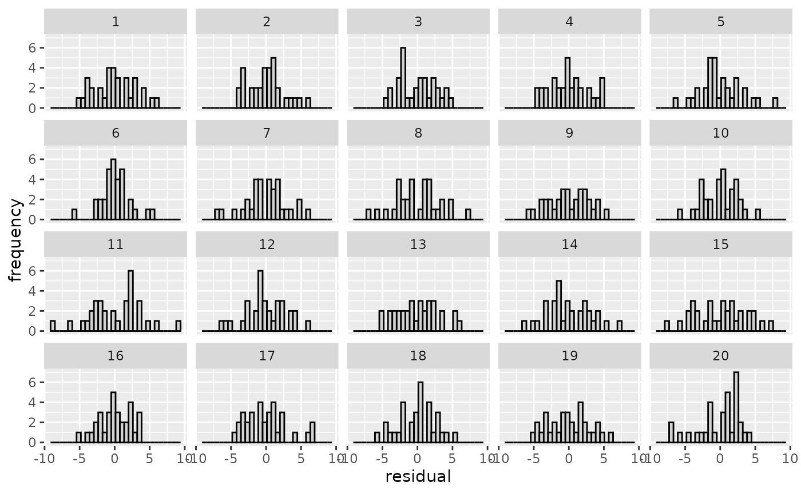
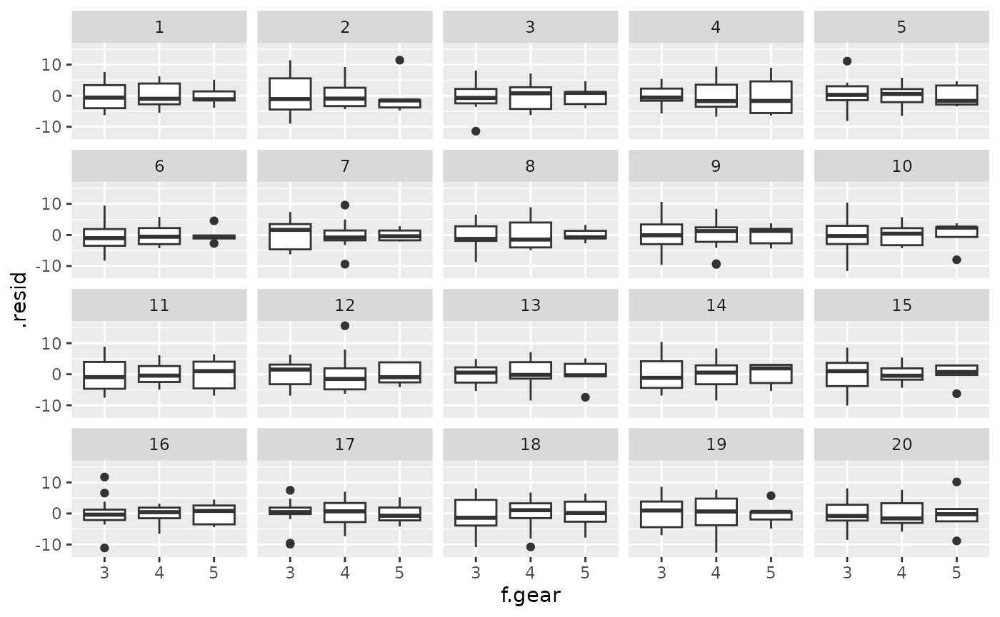
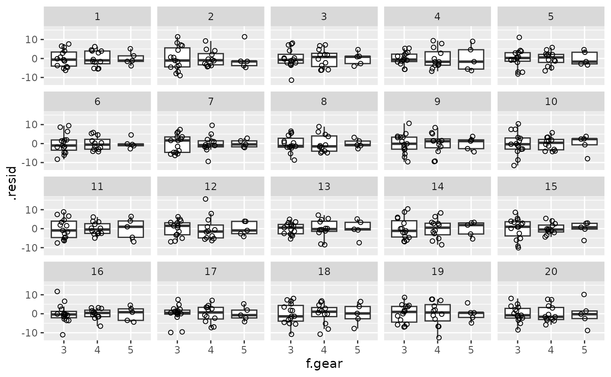
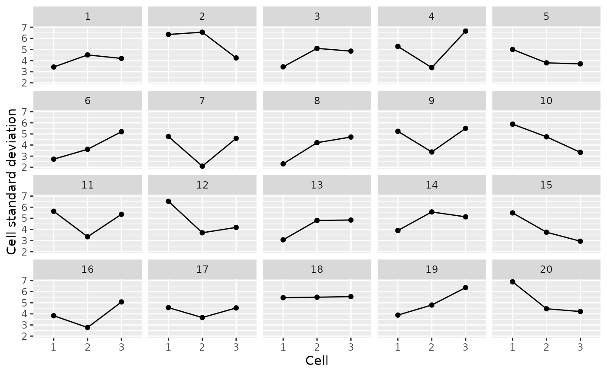

Graphically checking model assumptions
Source:vignettes/check-assumptions.Rmd
check-assumptions.RmdThe cannonball package contains a handful of functions
that can help you judge whether your data conform to the assumptions of
the statistical model you’ve fitted. By embedding the model’s diagnostic
plot in a line-up of diagnostic plots of simulated data for which the
model’s assumptions are literally met, you can more easily determine
whether any blips in these plots are indicative of assumption violations
or whether they can plausibly be accounted for by sampling error or
noise. The idea for this stems from Buja et al. (2009) and
is similar to posterior predictive checks in Bayesian statistics; see Vanhove (2018) for an
accompanying article.
Example with numeric predictors
Load the package and fit a simple regression model.
library(cannonball)
m <- lm(mpg ~ wt, data = mtcars)Using parade(), create a parade in which the real
dataset is hidden among 19 other datasets generated from the model. For
these other datasets, the model’s assumptions are literally met.
my_parade <- parade(m)The parade is itself a tibble/data frame:
my_parade
#> # A tibble: 640 × 7
#> wt mpg .fitted .resid .abs_resid .sqrt_abs_resid .sample
#> <dbl> <dbl> <dbl> <dbl> <dbl> <dbl> <int>
#> 1 2.62 19.0 22.5 -3.49 3.49 1.87 1
#> 2 2.88 22.7 21.2 1.48 1.48 1.21 1
#> 3 2.32 17.5 24.0 -6.57 6.57 2.56 1
#> 4 3.22 20.1 19.5 0.586 0.586 0.765 1
#> 5 3.44 20.8 18.4 2.43 2.43 1.56 1
#> 6 3.46 22.3 18.3 4.03 4.03 2.01 1
#> 7 3.57 12.7 17.7 -5.05 5.05 2.25 1
#> 8 3.19 19.5 19.6 -0.144 0.144 0.379 1
#> 9 3.15 19.7 19.8 -0.123 0.123 0.351 1
#> 10 3.44 18.0 18.4 -0.322 0.322 0.567 1
#> # ℹ 630 more rowsA handful of convenience functions are available for gauging how much
the true dataset stands out from the simulated ones. For instance,
lin_plot() can be used to check if the linearity assumption
is met. It plots the residuals against the fitted values; ideally, there
should be no residual trend in the plot.
Which of the plots below looks most different from the rest?
lin_plot(my_parade)
#> `geom_smooth()` using method = 'loess' and formula = 'y ~ x'
In nineteen of the above plots, the linearity assumption is literally met yet the scatterplot smoothers (LOESS fits in this case) are all nonlinear to some extent. If the true relationship were linear, there should only be a one-in-twenty chance that the plot you picked is the one with the true data.
Using reveal(), you can check your guess:
reveal(my_parade)
#> The true data are in position 2.You can also plot the residuals against a predictor like so:
lin_plot(my_parade, "wt")
#> `geom_smooth()` using method = 'loess' and formula = 'y ~ x'
Related functions are:
-
var_plot(): Check for non-constant variance in the residuals. -
norm_qq(): Check for non-normality of the residuals using a quantile–quantile plot. -
norm_hist(): Check for non-normality of the residuals using a histogram.
my_parade <- parade(m)
var_plot(my_parade)
#> `geom_smooth()` using method = 'loess' and formula = 'y ~ x'


# reveal(my_parade)Example with categorical predictors
If you’re working with categorical predictors, the standard
var_plot() is a bit difficult to read. One option is to
draw, say, boxplots per cell:
mtcars$f.gear <- factor(mtcars$gear)
m <- lm(mpg ~ f.gear, data = mtcars)
my_parade <- parade(m)
library(ggplot2)
my_parade |>
ggplot(aes(x = f.gear, y = .resid)) +
geom_boxplot() +
facet_wrap(vars(.sample))
# or even
my_parade |>
ggplot(aes(x = f.gear, y = .resid)) +
geom_boxplot(outlier.shape = NA) +
geom_point(shape = 1, position = position_jitter(width = 0.2, height = 0)) +
facet_wrap(vars(.sample))
Alternatively, or additionally, parade_summary() can be
used to compute summary statistics of the residuals per cell;
var_plot() can then plot these. This is particularly useful
if the outcome variable is pretty coarse: Without the by-cell averaging,
you would be able to identify the true data based not on violations of
the homoskedasticity assumptions but based on the fairly coarse nature
of the data.
my_parade |>
parade_summary() |>
var_plot()
#> Warning in parade_summary(my_parade): The outcome variable (mpg) contains 25
#> unique values. Perhaps you can draw standard diagnostic plots instead of
#> averaging the residuals?
References
Buja, Andreas, Dianne Cook, Heike Hofmann, Michael Lawrence, Eun-Kyung Lee, Deborah F. Swayne and Hadley Wickham. 2009. Statistical inference for exploratory data analysis and model diagnostics. Philosophical Transactions of the Royal Society A 367(1906). 4361–4383.
Vanhove, Jan. 2018. Checking the assumptions of your statistical model without getting paranoid. Preprint on PsyArxiv.